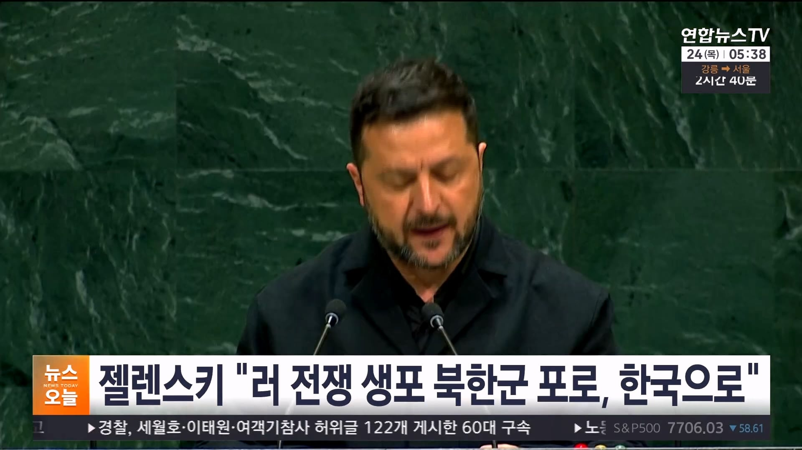
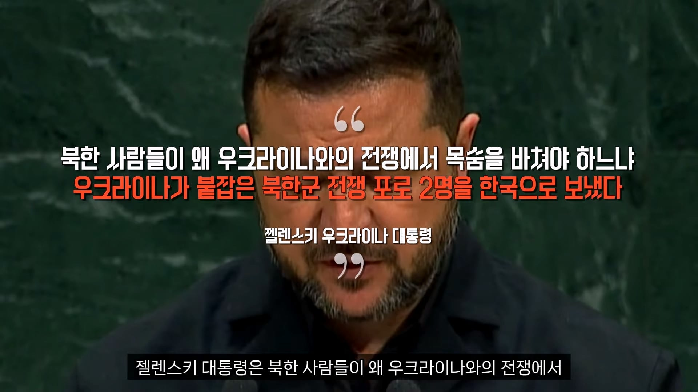
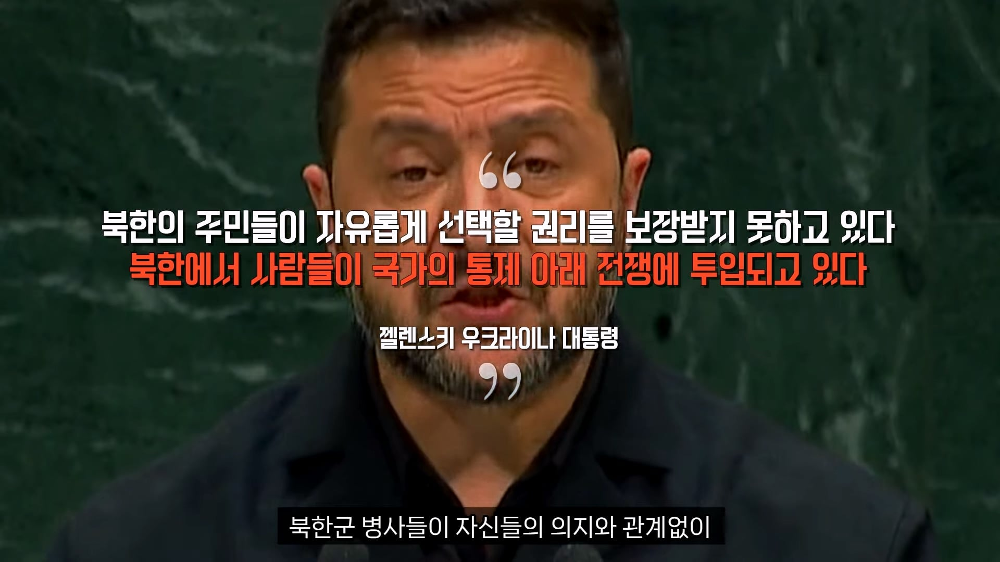
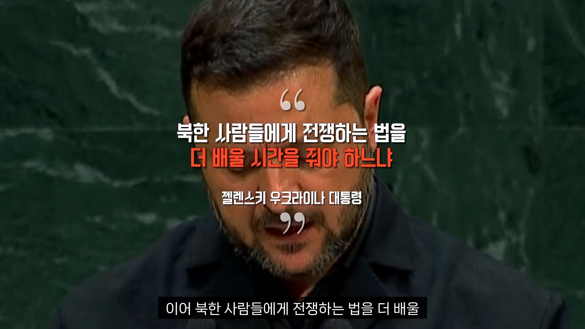
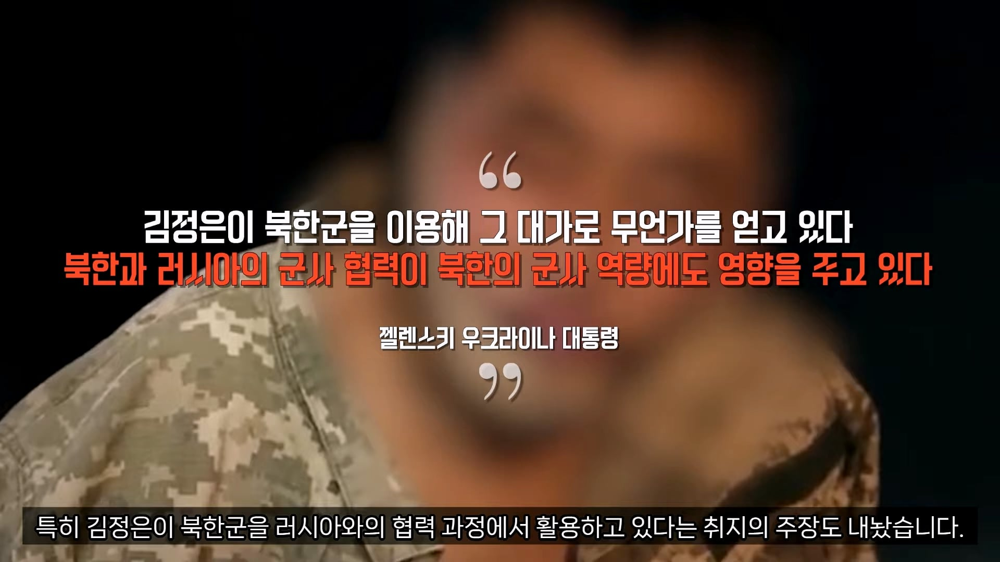
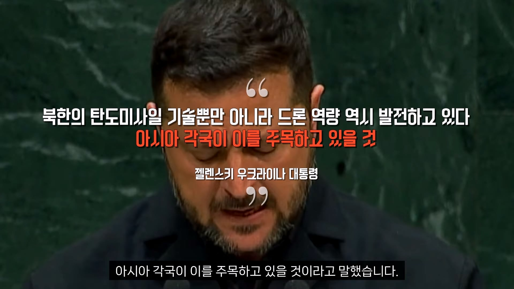
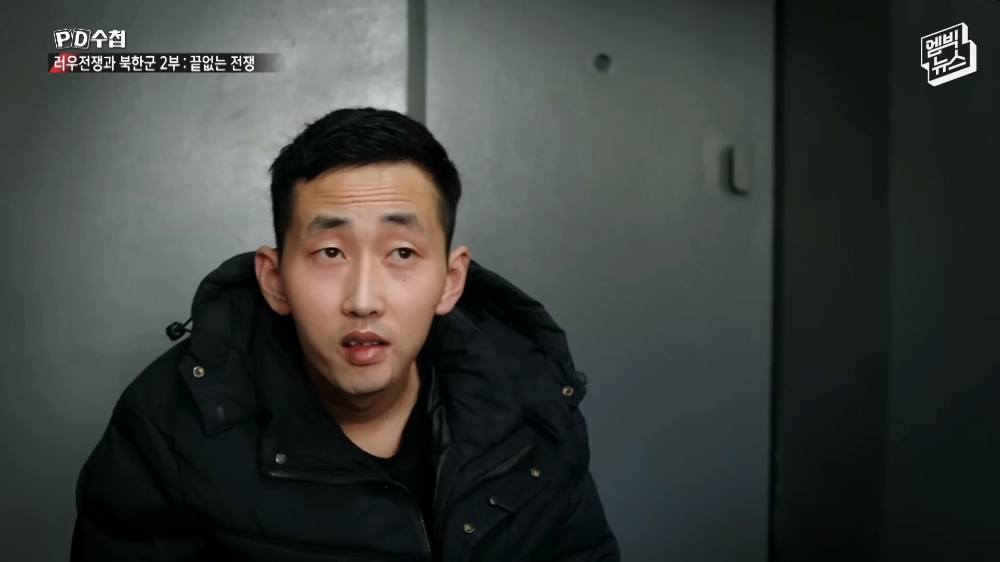
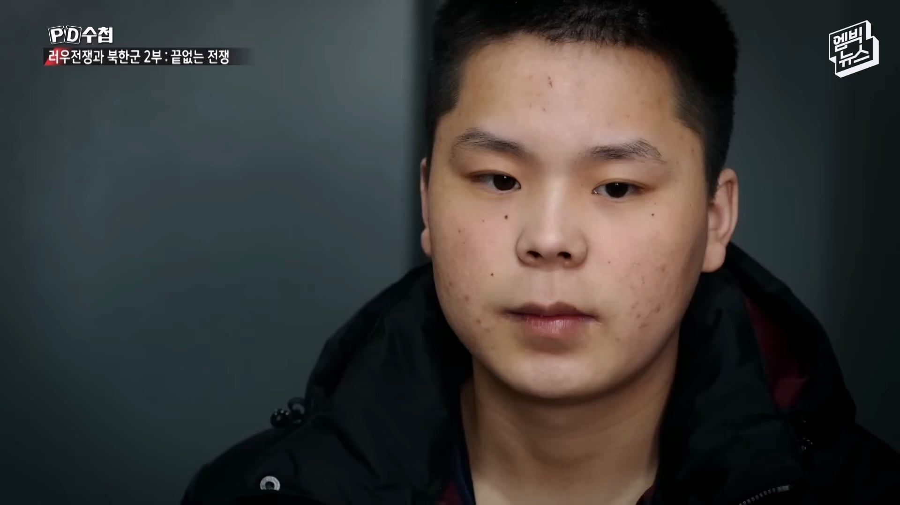

저 2명인듯








北포로 1년8개월만 한국행…우크라와 수십차례 물밑협상 결실
https://www.koreancenter.or.kr/news/articleView.html?idxno=1415600
한국 정부는 헌법상 한국 국민인 북한군 포로들이 귀순 의사를 명확히 한 만큼 이들을 수용하겠다는 입장을 견지하고, 국제법 등 법률적 검토와 함께 우크라이나 정부와 협의를 이어왔다.
북한군 포로의 신병을 넘겨받은 한국 정부는 안전을 고려해 이들의 동선이나 국내 정착을 위한 추가 조치 등이 노출되지 않도록 철저히 보안을 유지할 것으로 예상된다.
물밑협상..
우크라이나에 뭘 주기로 했으려나?
당연히 기브앤 테이크라 뭘 주기로한듯
사실 쟤네입장에선 얼굴 노출되면 그거도 그거대로 신변의 위협이 생기고 가족들도 생사가 무사하지 못한경우가 많이 생기니 국정원에선 가급적이면 노출안시키고 데려오는경우가 많을거임.
저 둘의 경우 북한이 파병을 계속 부인해서 북한군 개입을 증명하려고 우크라에서 먼저 공개석상에 내세운 케이스였고
그냥 거기서 죽여줘
쟤네 나쁜애들임?
저정도로 세뇌당한애들은 우리나라와도 답없지않나
쟤네는 나름 망명의사 밝힌애들이구나
최신 전쟁 데이터도 얻을 수 있고, 다양한 정보 캐내기 좋긴하겠네
두번째놈은 후임 괴롭히는거 엄청 즐길것같은 와꾸네
자대에서 보게 되면 ㅈ되는 선임 관상
대한민국 국민이 조선노동당아래 강제징집되고 전쟁까지 나갔는데 1억달러주고 데려올수있으면 된거지